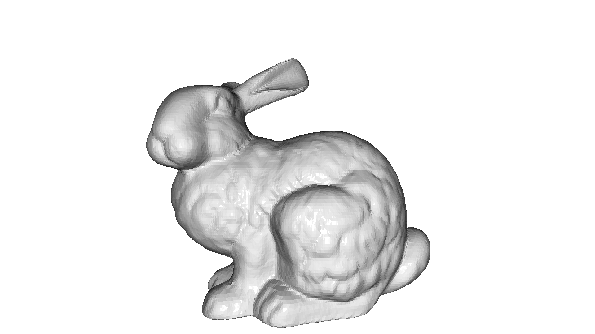
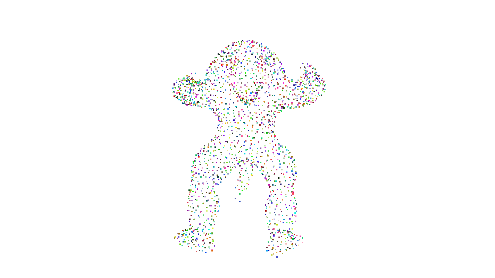
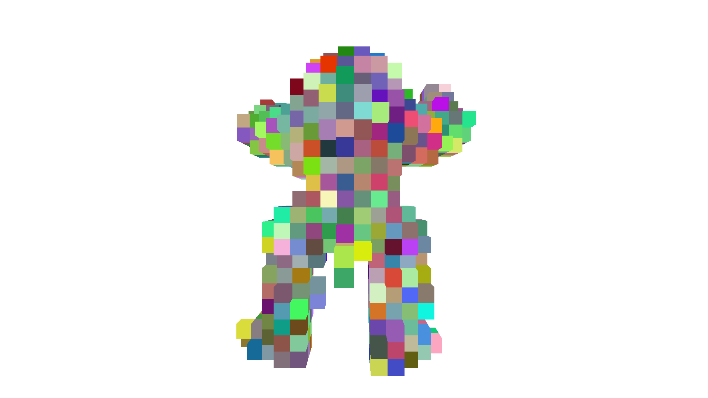
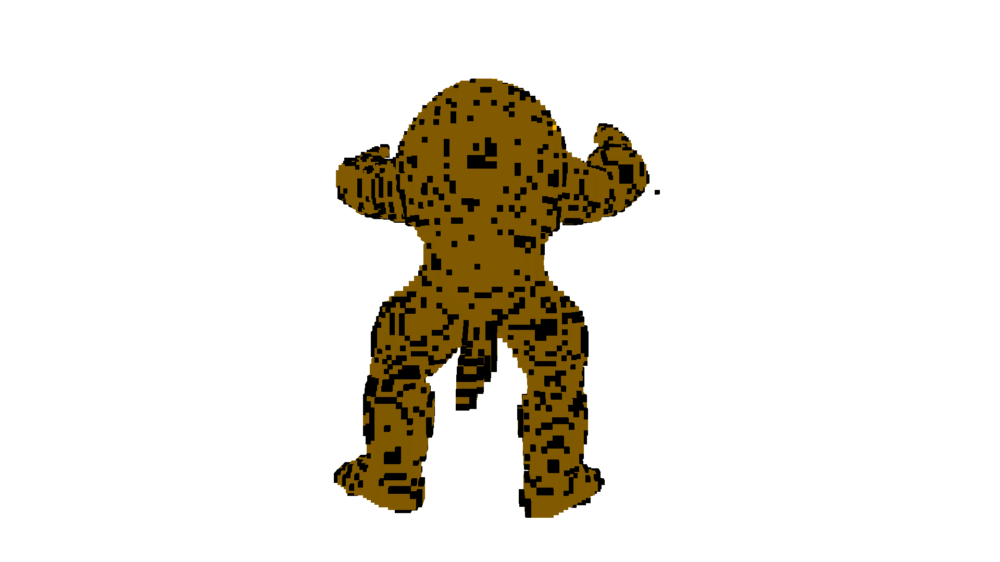

Note
This tutorial is generated from a Jupyter notebook that can be downloaded and run interactively.
Voxelization#
Point clouds and triangle meshes are very flexible, but irregular, geometry types. The voxel grid is another geometry type in 3D that is defined on a regular 3D grid, whereas a voxel can be thought of as the 3D counterpart to the pixel in 2D. CloudViewer has the geometry type VoxelGrid that can be used to work with voxel grids.
From triangle mesh#
CloudViewer provides the method create_from_triangle_mesh that creates a voxel grid from a triangle mesh. It returns a voxel grid where all voxels that are intersected by a triangle are set to 1, all others are set to 0. The argument voxel_size defines the resolution of the voxel grid.
[2]:
print('input')
bunny = cv3d.data.BunnyMesh()
mesh = cv3d.io.read_triangle_mesh(bunny.path)
mesh.compute_vertex_normals()
# fit to unit cube
mesh.scale(1 / np.max(mesh.get_max_bound() - mesh.get_min_bound()),
center=mesh.get_center())
cv3d.visualization.draw_geometries([mesh])
print('voxelization')
voxel_grid = cv3d.geometry.VoxelGrid.create_from_triangle_mesh(mesh,
voxel_size=0.05)
cv3d.visualization.draw_geometries([voxel_grid])
input
[CloudViewer WARNING] GLFW Error: X11: The DISPLAY environment variable is missing
[CloudViewer WARNING] GLFW initialized for headless rendering.

voxelization
[CloudViewer WARNING] GLFW initialized for headless rendering.
From point cloud#
The voxel grid can also be created from a point cloud using the method create_from_point_cloud. A voxel is occupied if at least one point of the point cloud is within the voxel. The color of the voxel is the average of all the points within the voxel. The argument voxel_size defines the resolution of the voxel grid.
[3]:
print('input')
N = 2000
armadillo_data = cv3d.data.ArmadilloMesh()
pcd = cv3d.io.read_triangle_mesh(
armadillo_data.path).sample_points_poisson_disk(N)
# fit to unit cube
pcd.scale(1 / np.max(pcd.get_max_bound() - pcd.get_min_bound()),
center=pcd.get_center())
pcd.set_colors(cv3d.utility.Vector3dVector(np.random.uniform(0, 1,
size=(N, 3))))
cv3d.visualization.draw_geometries([pcd])
print('voxelization')
voxel_grid = cv3d.geometry.VoxelGrid.create_from_point_cloud(pcd,
voxel_size=0.05)
cv3d.visualization.draw_geometries([voxel_grid])
input
[CloudViewer WARNING] GLFW initialized for headless rendering.

voxelization
[CloudViewer WARNING] GLFW initialized for headless rendering.

Inclusion test#
The voxel grid can also be used to test if points are within an occupied voxel. The method check_if_included takes a (n,3) array as input and outputs a bool array.
[4]:
queries = np.asarray(pcd.get_points())
output = voxel_grid.check_if_included(cv3d.utility.Vector3dVector(queries))
print(output[:10])
[True, True, True, True, True, True, True, True, True, True]
Voxel carving#
The methods create_from_point_cloud and create_from_triangle_mesh create occupied voxels only on the surface of the geometry. It is however possible to carve a voxel grid from a number of depth maps or silhouettes. CloudViewer provides the methods carve_depth_map and carve_silhouette for voxel carving.
The code below demonstrates the usage by first rendering depthmaps from a geometry and using those depthmaps to carve a dense voxel grid. The result is a filled voxel grid of the given shape.
[5]:
def xyz_spherical(xyz):
x = xyz[0]
y = xyz[1]
z = xyz[2]
r = np.sqrt(x * x + y * y + z * z)
r_x = np.arccos(y / r)
r_y = np.arctan2(z, x)
return [r, r_x, r_y]
def get_rotation_matrix(r_x, r_y):
rot_x = np.asarray([[1, 0, 0], [0, np.cos(r_x), -np.sin(r_x)],
[0, np.sin(r_x), np.cos(r_x)]])
rot_y = np.asarray([[np.cos(r_y), 0, np.sin(r_y)], [0, 1, 0],
[-np.sin(r_y), 0, np.cos(r_y)]])
return rot_y.dot(rot_x)
def get_extrinsic(xyz):
rvec = xyz_spherical(xyz)
r = get_rotation_matrix(rvec[1], rvec[2])
t = np.asarray([0, 0, 2]).transpose()
trans = np.eye(4)
trans[:3, :3] = r
trans[:3, 3] = t
return trans
def preprocess(model):
min_bound = model.get_min_bound()
max_bound = model.get_max_bound()
center = min_bound + (max_bound - min_bound) / 2.0
scale = np.linalg.norm(max_bound - min_bound) / 2.0
vertices = np.asarray(model.get_vertices())
vertices -= center
model.set_vertices(cv3d.utility.Vector3dVector(vertices / scale))
return model
def voxel_carving(mesh,
cubic_size,
voxel_resolution,
w=300,
h=300,
use_depth=True,
surface_method='pointcloud'):
mesh.compute_vertex_normals()
camera_sphere = cv3d.geometry.ccMesh.create_sphere()
# setup dense voxel grid
voxel_carving = cv3d.geometry.VoxelGrid.create_dense(
width=cubic_size,
height=cubic_size,
depth=cubic_size,
voxel_size=cubic_size / voxel_resolution,
origin=[-cubic_size / 2.0, -cubic_size / 2.0, -cubic_size / 2.0],
color=[1.0, 0.7, 0.0])
# rescale geometry
camera_sphere = preprocess(camera_sphere)
mesh = preprocess(mesh)
# setup visualizer to render depthmaps
vis = cv3d.visualization.Visualizer()
vis.create_window(width=w, height=h, visible=False)
vis.add_geometry(mesh)
vis.get_render_option().mesh_show_back_face = True
ctr = vis.get_view_control()
param = ctr.convert_to_pinhole_camera_parameters()
# carve voxel grid
pcd_agg = cv3d.geometry.ccPointCloud()
centers_pts = np.zeros((len(camera_sphere.get_vertices()), 3))
for cid, xyz in enumerate(camera_sphere.get_vertices()):
# get new camera pose
trans = get_extrinsic(xyz)
param.extrinsic = trans
c = np.linalg.inv(trans).dot(np.asarray([0, 0, 0, 1]).transpose())
centers_pts[cid, :] = c[:3]
ctr.convert_from_pinhole_camera_parameters(param)
# capture depth image and make a point cloud
vis.poll_events()
vis.update_renderer()
depth = vis.capture_depth_float_buffer(False)
pcd_agg += cv3d.geometry.ccPointCloud.create_from_depth_image(
cv3d.geometry.Image(depth),
param.intrinsic,
param.extrinsic,
depth_scale=1)
# depth map carving method
if use_depth:
voxel_carving.carve_depth_map(cv3d.geometry.Image(depth), param)
else:
voxel_carving.carve_silhouette(cv3d.geometry.Image(depth), param)
print("Carve view %03d/%03d" %
(cid + 1, len(camera_sphere.get_vertices())))
vis.destroy_window()
# add voxel grid survace
print('Surface voxel grid from %s' % surface_method)
if surface_method == 'pointcloud':
voxel_surface = cv3d.geometry.VoxelGrid.create_from_point_cloud_within_bounds(
pcd_agg,
voxel_size=cubic_size / voxel_resolution,
min_bound=(-cubic_size / 2, -cubic_size / 2, -cubic_size / 2),
max_bound=(cubic_size / 2, cubic_size / 2, cubic_size / 2))
elif surface_method == 'mesh':
voxel_surface = cv3d.geometry.VoxelGrid.create_from_triangle_mesh_within_bounds(
mesh,
voxel_size=cubic_size / voxel_resolution,
min_bound=(-cubic_size / 2, -cubic_size / 2, -cubic_size / 2),
max_bound=(cubic_size / 2, cubic_size / 2, cubic_size / 2))
else:
raise Exception('invalid surface method')
voxel_carving_surface = voxel_surface + voxel_carving
return voxel_carving_surface, voxel_carving, voxel_surface
[6]:
armadillo_data = cv3d.data.ArmadilloMesh()
mesh = cv3d.io.read_triangle_mesh(armadillo_data.path)
mesh.compute_vertex_normals()
visualization = True
cubic_size = 2.0
voxel_resolution = 128.0
voxel_grid, voxel_carving, voxel_surface = voxel_carving(
mesh, cubic_size, voxel_resolution)
[CloudViewer WARNING] GLFW initialized for headless rendering.
Carve view 001/762
Carve view 002/762
Carve view 003/762
Carve view 004/762
Carve view 005/762
Carve view 006/762
Carve view 007/762
Carve view 008/762
Carve view 009/762
Carve view 010/762
Carve view 011/762
Carve view 012/762
Carve view 013/762
Carve view 014/762
Carve view 015/762
Carve view 016/762
Carve view 017/762
Carve view 018/762
Carve view 019/762
Carve view 020/762
Carve view 021/762
Carve view 022/762
Carve view 023/762
Carve view 024/762
Carve view 025/762
Carve view 026/762
Carve view 027/762
Carve view 028/762
Carve view 029/762
Carve view 030/762
Carve view 031/762
Carve view 032/762
Carve view 033/762
Carve view 034/762
Carve view 035/762
Carve view 036/762
Carve view 037/762
Carve view 038/762
Carve view 039/762
Carve view 040/762
Carve view 041/762
Carve view 042/762
Carve view 043/762
Carve view 044/762
Carve view 045/762
Carve view 046/762
Carve view 047/762
Carve view 048/762
Carve view 049/762
Carve view 050/762
Carve view 051/762
Carve view 052/762
Carve view 053/762
Carve view 054/762
Carve view 055/762
Carve view 056/762
Carve view 057/762
Carve view 058/762
Carve view 059/762
Carve view 060/762
Carve view 061/762
Carve view 062/762
Carve view 063/762
Carve view 064/762
Carve view 065/762
Carve view 066/762
Carve view 067/762
Carve view 068/762
Carve view 069/762
Carve view 070/762
Carve view 071/762
Carve view 072/762
Carve view 073/762
Carve view 074/762
Carve view 075/762
Carve view 076/762
Carve view 077/762
Carve view 078/762
Carve view 079/762
Carve view 080/762
Carve view 081/762
Carve view 082/762
Carve view 083/762
Carve view 084/762
Carve view 085/762
Carve view 086/762
Carve view 087/762
Carve view 088/762
Carve view 089/762
Carve view 090/762
Carve view 091/762
Carve view 092/762
Carve view 093/762
Carve view 094/762
Carve view 095/762
Carve view 096/762
Carve view 097/762
Carve view 098/762
Carve view 099/762
Carve view 100/762
Carve view 101/762
Carve view 102/762
Carve view 103/762
Carve view 104/762
Carve view 105/762
Carve view 106/762
Carve view 107/762
Carve view 108/762
Carve view 109/762
Carve view 110/762
Carve view 111/762
Carve view 112/762
Carve view 113/762
Carve view 114/762
Carve view 115/762
Carve view 116/762
Carve view 117/762
Carve view 118/762
Carve view 119/762
Carve view 120/762
Carve view 121/762
Carve view 122/762
Carve view 123/762
Carve view 124/762
Carve view 125/762
Carve view 126/762
Carve view 127/762
Carve view 128/762
Carve view 129/762
Carve view 130/762
Carve view 131/762
Carve view 132/762
Carve view 133/762
Carve view 134/762
Carve view 135/762
Carve view 136/762
Carve view 137/762
Carve view 138/762
Carve view 139/762
Carve view 140/762
Carve view 141/762
Carve view 142/762
Carve view 143/762
Carve view 144/762
Carve view 145/762
Carve view 146/762
Carve view 147/762
Carve view 148/762
Carve view 149/762
Carve view 150/762
Carve view 151/762
Carve view 152/762
Carve view 153/762
Carve view 154/762
Carve view 155/762
Carve view 156/762
Carve view 157/762
Carve view 158/762
Carve view 159/762
Carve view 160/762
Carve view 161/762
Carve view 162/762
Carve view 163/762
Carve view 164/762
Carve view 165/762
Carve view 166/762
Carve view 167/762
Carve view 168/762
Carve view 169/762
Carve view 170/762
Carve view 171/762
Carve view 172/762
Carve view 173/762
Carve view 174/762
Carve view 175/762
Carve view 176/762
Carve view 177/762
Carve view 178/762
Carve view 179/762
Carve view 180/762
Carve view 181/762
Carve view 182/762
Carve view 183/762
Carve view 184/762
Carve view 185/762
Carve view 186/762
Carve view 187/762
Carve view 188/762
Carve view 189/762
Carve view 190/762
Carve view 191/762
Carve view 192/762
Carve view 193/762
Carve view 194/762
Carve view 195/762
Carve view 196/762
Carve view 197/762
Carve view 198/762
Carve view 199/762
Carve view 200/762
Carve view 201/762
Carve view 202/762
Carve view 203/762
Carve view 204/762
Carve view 205/762
Carve view 206/762
Carve view 207/762
Carve view 208/762
Carve view 209/762
Carve view 210/762
Carve view 211/762
Carve view 212/762
Carve view 213/762
Carve view 214/762
Carve view 215/762
Carve view 216/762
Carve view 217/762
Carve view 218/762
Carve view 219/762
Carve view 220/762
Carve view 221/762
Carve view 222/762
Carve view 223/762
Carve view 224/762
Carve view 225/762
Carve view 226/762
Carve view 227/762
Carve view 228/762
Carve view 229/762
Carve view 230/762
Carve view 231/762
Carve view 232/762
Carve view 233/762
Carve view 234/762
Carve view 235/762
Carve view 236/762
Carve view 237/762
Carve view 238/762
Carve view 239/762
Carve view 240/762
Carve view 241/762
Carve view 242/762
Carve view 243/762
Carve view 244/762
Carve view 245/762
Carve view 246/762
Carve view 247/762
Carve view 248/762
Carve view 249/762
Carve view 250/762
Carve view 251/762
Carve view 252/762
Carve view 253/762
Carve view 254/762
Carve view 255/762
Carve view 256/762
Carve view 257/762
Carve view 258/762
Carve view 259/762
Carve view 260/762
Carve view 261/762
Carve view 262/762
Carve view 263/762
Carve view 264/762
Carve view 265/762
Carve view 266/762
Carve view 267/762
Carve view 268/762
Carve view 269/762
Carve view 270/762
Carve view 271/762
Carve view 272/762
Carve view 273/762
Carve view 274/762
Carve view 275/762
Carve view 276/762
Carve view 277/762
Carve view 278/762
Carve view 279/762
Carve view 280/762
Carve view 281/762
Carve view 282/762
Carve view 283/762
Carve view 284/762
Carve view 285/762
Carve view 286/762
Carve view 287/762
Carve view 288/762
Carve view 289/762
Carve view 290/762
Carve view 291/762
Carve view 292/762
Carve view 293/762
Carve view 294/762
Carve view 295/762
Carve view 296/762
Carve view 297/762
Carve view 298/762
Carve view 299/762
Carve view 300/762
Carve view 301/762
Carve view 302/762
Carve view 303/762
Carve view 304/762
Carve view 305/762
Carve view 306/762
Carve view 307/762
Carve view 308/762
Carve view 309/762
Carve view 310/762
Carve view 311/762
Carve view 312/762
Carve view 313/762
Carve view 314/762
Carve view 315/762
Carve view 316/762
Carve view 317/762
Carve view 318/762
Carve view 319/762
Carve view 320/762
Carve view 321/762
Carve view 322/762
Carve view 323/762
Carve view 324/762
Carve view 325/762
Carve view 326/762
Carve view 327/762
Carve view 328/762
Carve view 329/762
Carve view 330/762
Carve view 331/762
Carve view 332/762
Carve view 333/762
Carve view 334/762
Carve view 335/762
Carve view 336/762
Carve view 337/762
Carve view 338/762
Carve view 339/762
Carve view 340/762
Carve view 341/762
Carve view 342/762
Carve view 343/762
Carve view 344/762
Carve view 345/762
Carve view 346/762
Carve view 347/762
Carve view 348/762
Carve view 349/762
Carve view 350/762
Carve view 351/762
Carve view 352/762
Carve view 353/762
Carve view 354/762
Carve view 355/762
Carve view 356/762
Carve view 357/762
Carve view 358/762
Carve view 359/762
Carve view 360/762
Carve view 361/762
Carve view 362/762
Carve view 363/762
Carve view 364/762
Carve view 365/762
Carve view 366/762
Carve view 367/762
Carve view 368/762
Carve view 369/762
Carve view 370/762
Carve view 371/762
Carve view 372/762
Carve view 373/762
Carve view 374/762
Carve view 375/762
Carve view 376/762
Carve view 377/762
Carve view 378/762
Carve view 379/762
Carve view 380/762
Carve view 381/762
Carve view 382/762
Carve view 383/762
Carve view 384/762
Carve view 385/762
Carve view 386/762
Carve view 387/762
Carve view 388/762
Carve view 389/762
Carve view 390/762
Carve view 391/762
Carve view 392/762
Carve view 393/762
Carve view 394/762
Carve view 395/762
Carve view 396/762
Carve view 397/762
Carve view 398/762
Carve view 399/762
Carve view 400/762
Carve view 401/762
Carve view 402/762
Carve view 403/762
Carve view 404/762
Carve view 405/762
Carve view 406/762
Carve view 407/762
Carve view 408/762
Carve view 409/762
Carve view 410/762
Carve view 411/762
Carve view 412/762
Carve view 413/762
Carve view 414/762
Carve view 415/762
Carve view 416/762
Carve view 417/762
Carve view 418/762
Carve view 419/762
Carve view 420/762
Carve view 421/762
Carve view 422/762
Carve view 423/762
Carve view 424/762
Carve view 425/762
Carve view 426/762
Carve view 427/762
Carve view 428/762
Carve view 429/762
Carve view 430/762
Carve view 431/762
Carve view 432/762
Carve view 433/762
Carve view 434/762
Carve view 435/762
Carve view 436/762
Carve view 437/762
Carve view 438/762
Carve view 439/762
Carve view 440/762
Carve view 441/762
Carve view 442/762
Carve view 443/762
Carve view 444/762
Carve view 445/762
Carve view 446/762
Carve view 447/762
Carve view 448/762
Carve view 449/762
Carve view 450/762
Carve view 451/762
Carve view 452/762
Carve view 453/762
Carve view 454/762
Carve view 455/762
Carve view 456/762
Carve view 457/762
Carve view 458/762
Carve view 459/762
Carve view 460/762
Carve view 461/762
Carve view 462/762
Carve view 463/762
Carve view 464/762
Carve view 465/762
Carve view 466/762
Carve view 467/762
Carve view 468/762
Carve view 469/762
Carve view 470/762
Carve view 471/762
Carve view 472/762
Carve view 473/762
Carve view 474/762
Carve view 475/762
Carve view 476/762
Carve view 477/762
Carve view 478/762
Carve view 479/762
Carve view 480/762
Carve view 481/762
Carve view 482/762
Carve view 483/762
Carve view 484/762
Carve view 485/762
Carve view 486/762
Carve view 487/762
Carve view 488/762
Carve view 489/762
Carve view 490/762
Carve view 491/762
Carve view 492/762
Carve view 493/762
Carve view 494/762
Carve view 495/762
Carve view 496/762
Carve view 497/762
Carve view 498/762
Carve view 499/762
Carve view 500/762
Carve view 501/762
Carve view 502/762
Carve view 503/762
Carve view 504/762
Carve view 505/762
Carve view 506/762
Carve view 507/762
Carve view 508/762
Carve view 509/762
Carve view 510/762
Carve view 511/762
Carve view 512/762
Carve view 513/762
Carve view 514/762
Carve view 515/762
Carve view 516/762
Carve view 517/762
Carve view 518/762
Carve view 519/762
Carve view 520/762
Carve view 521/762
Carve view 522/762
Carve view 523/762
Carve view 524/762
Carve view 525/762
Carve view 526/762
Carve view 527/762
Carve view 528/762
Carve view 529/762
Carve view 530/762
Carve view 531/762
Carve view 532/762
Carve view 533/762
Carve view 534/762
Carve view 535/762
Carve view 536/762
Carve view 537/762
Carve view 538/762
Carve view 539/762
Carve view 540/762
Carve view 541/762
Carve view 542/762
Carve view 543/762
Carve view 544/762
Carve view 545/762
Carve view 546/762
Carve view 547/762
Carve view 548/762
Carve view 549/762
Carve view 550/762
Carve view 551/762
Carve view 552/762
Carve view 553/762
Carve view 554/762
Carve view 555/762
Carve view 556/762
Carve view 557/762
Carve view 558/762
Carve view 559/762
Carve view 560/762
Carve view 561/762
Carve view 562/762
Carve view 563/762
Carve view 564/762
Carve view 565/762
Carve view 566/762
Carve view 567/762
Carve view 568/762
Carve view 569/762
Carve view 570/762
Carve view 571/762
Carve view 572/762
Carve view 573/762
Carve view 574/762
Carve view 575/762
Carve view 576/762
Carve view 577/762
Carve view 578/762
Carve view 579/762
Carve view 580/762
Carve view 581/762
Carve view 582/762
Carve view 583/762
Carve view 584/762
Carve view 585/762
Carve view 586/762
Carve view 587/762
Carve view 588/762
Carve view 589/762
Carve view 590/762
Carve view 591/762
Carve view 592/762
Carve view 593/762
Carve view 594/762
Carve view 595/762
Carve view 596/762
Carve view 597/762
Carve view 598/762
Carve view 599/762
Carve view 600/762
Carve view 601/762
Carve view 602/762
Carve view 603/762
Carve view 604/762
Carve view 605/762
Carve view 606/762
Carve view 607/762
Carve view 608/762
Carve view 609/762
Carve view 610/762
Carve view 611/762
Carve view 612/762
Carve view 613/762
Carve view 614/762
Carve view 615/762
Carve view 616/762
Carve view 617/762
Carve view 618/762
Carve view 619/762
Carve view 620/762
Carve view 621/762
Carve view 622/762
Carve view 623/762
Carve view 624/762
Carve view 625/762
Carve view 626/762
Carve view 627/762
Carve view 628/762
Carve view 629/762
Carve view 630/762
Carve view 631/762
Carve view 632/762
Carve view 633/762
Carve view 634/762
Carve view 635/762
Carve view 636/762
Carve view 637/762
Carve view 638/762
Carve view 639/762
Carve view 640/762
Carve view 641/762
Carve view 642/762
Carve view 643/762
Carve view 644/762
Carve view 645/762
Carve view 646/762
Carve view 647/762
Carve view 648/762
Carve view 649/762
Carve view 650/762
Carve view 651/762
Carve view 652/762
Carve view 653/762
Carve view 654/762
Carve view 655/762
Carve view 656/762
Carve view 657/762
Carve view 658/762
Carve view 659/762
Carve view 660/762
Carve view 661/762
Carve view 662/762
Carve view 663/762
Carve view 664/762
Carve view 665/762
Carve view 666/762
Carve view 667/762
Carve view 668/762
Carve view 669/762
Carve view 670/762
Carve view 671/762
Carve view 672/762
Carve view 673/762
Carve view 674/762
Carve view 675/762
Carve view 676/762
Carve view 677/762
Carve view 678/762
Carve view 679/762
Carve view 680/762
Carve view 681/762
Carve view 682/762
Carve view 683/762
Carve view 684/762
Carve view 685/762
Carve view 686/762
Carve view 687/762
Carve view 688/762
Carve view 689/762
Carve view 690/762
Carve view 691/762
Carve view 692/762
Carve view 693/762
Carve view 694/762
Carve view 695/762
Carve view 696/762
Carve view 697/762
Carve view 698/762
Carve view 699/762
Carve view 700/762
Carve view 701/762
Carve view 702/762
Carve view 703/762
Carve view 704/762
Carve view 705/762
Carve view 706/762
Carve view 707/762
Carve view 708/762
Carve view 709/762
Carve view 710/762
Carve view 711/762
Carve view 712/762
Carve view 713/762
Carve view 714/762
Carve view 715/762
Carve view 716/762
Carve view 717/762
Carve view 718/762
Carve view 719/762
Carve view 720/762
Carve view 721/762
Carve view 722/762
Carve view 723/762
Carve view 724/762
Carve view 725/762
Carve view 726/762
Carve view 727/762
Carve view 728/762
Carve view 729/762
Carve view 730/762
Carve view 731/762
Carve view 732/762
Carve view 733/762
Carve view 734/762
Carve view 735/762
Carve view 736/762
Carve view 737/762
Carve view 738/762
Carve view 739/762
Carve view 740/762
Carve view 741/762
Carve view 742/762
Carve view 743/762
Carve view 744/762
Carve view 745/762
Carve view 746/762
Carve view 747/762
Carve view 748/762
Carve view 749/762
Carve view 750/762
Carve view 751/762
Carve view 752/762
Carve view 753/762
Carve view 754/762
Carve view 755/762
Carve view 756/762
Carve view 757/762
Carve view 758/762
Carve view 759/762
Carve view 760/762
Carve view 761/762
Carve view 762/762
Surface voxel grid from pointcloud
[7]:
print("surface voxels")
print(voxel_surface)
cv3d.visualization.draw_geometries([voxel_surface])
print("carved voxels")
print(voxel_carving)
cv3d.visualization.draw_geometries([voxel_carving])
print("combined voxels (carved + surface)")
print(voxel_grid)
cv3d.visualization.draw_geometries([voxel_grid])
surface voxels
VoxelGrid with 17218 voxels.
[CloudViewer WARNING] GLFW initialized for headless rendering.
carved voxels
VoxelGrid with 48379 voxels.
[CloudViewer WARNING] GLFW initialized for headless rendering.
combined voxels (carved + surface)
VoxelGrid with 50793 voxels.
[CloudViewer WARNING] GLFW initialized for headless rendering.
